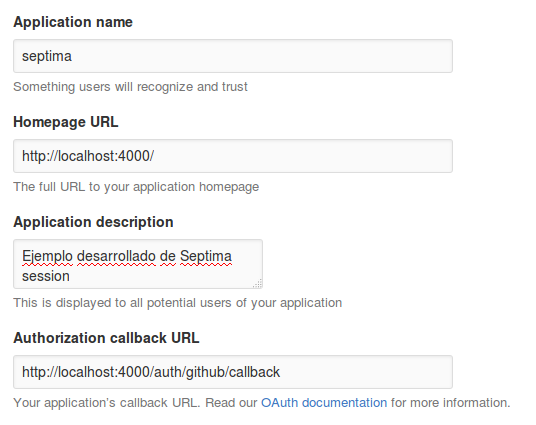
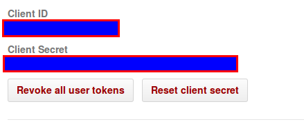
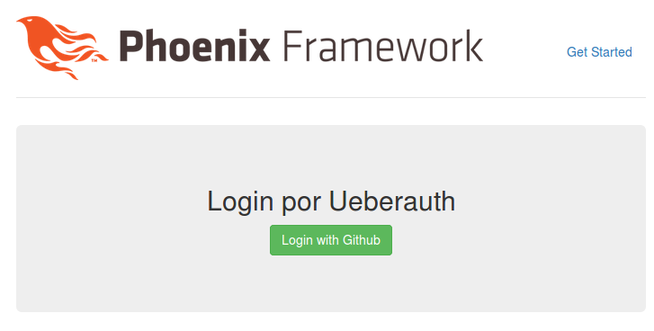
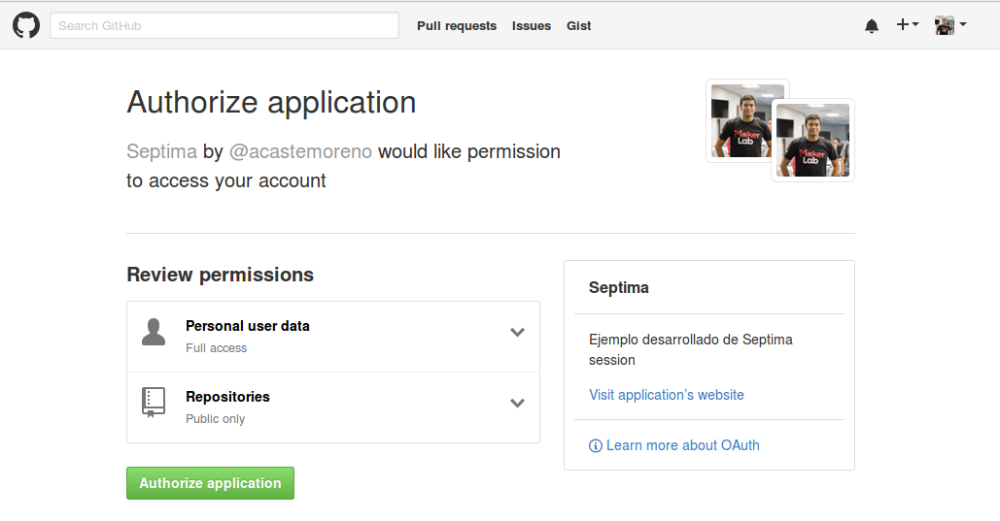
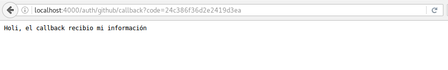

Es el proceso por el cual el usuario se identifica ante la aplicación.
Para este proceso usaremos la siguiente libreria Ueberauth, que es un sistema de autenticacion basado en plug
plugs que decoran o interceptan (o ambos) requests. Las estrategias implementan 2 fases.request phase ha sido completado, el provider (facebook, twitter, github, …) llamara a un url Callback enviando la información del usuario.mix phoenix.new septimaseptima/config/dev.exs y configuramos ecto con el usuario y contraseña creados.mix ecto.createBasicamente pasos basicos para no tener problemas con mensaje de error por conexion a base de datos.
Ahora teniendo una cuenta github entramos al siguiente link para registrar nuestra aplicación ante github.
Es importante que los campos para Homepage URL y Authorization callback URL sean igual a la imagen. Se explicara más adelante la razón.

Una vez registrada nuestra aplicación ante gihub, tomaremos nota de la siguiente información sensible Client ID y Client Secret

Es importante que esta información sea bien guardada por motivos de seguridad.
ueberauth a nuestra dependencias en mix.exs:
def deps do
[{:ueberauth_github, "~> 0.4"}]
end
github como aplicación en mix.exs:def application do [applications: [:ueberauth_github]] end
ueberauth tambien ha sido registrada (forma parte de las librerias y aplicaciones de ueberauth_github). Dicho esto necesitamos configurar ueberauth agregando el siguiente codigo a /config/config.exs
config :ueberauth, Ueberauth,
providers: [
github: {Ueberauth.Strategy.Github, []}
]
config/dev.exs agregamos el siguiente codigo:import_config "dev.secret.exs"
config/dev.secret.exs con el siguiente codigo reemplazando los valores correspondientes a cliente_id y client_secret:use Mix.Config config :ueberauth, Ueberauth.Strategy.Github.OAuth, client_id: "holi, soy un texto que representa el cliente_id, reemplazame :v", client_secret: "holi, soy un texto que representa el client_secret, reemplazame :v"
.gitignore añadiendo la siguiente linea al final:... /config/prod.secret.exs /config/dev.secret.exs
Todo esto para asegurarnos de que no subamos por accidente información sensible a github.
web/router.exs de la siguiente manera:
defmodule Septima.Router do
use Septima.Web, :router
...
scope "/", Septima do
pipe_through :browser # Use the default browser stack
get "/", PageController, :index
end
scope "/auth", Septima do
pipe_through :browser
get "/:provider", AuthController, :request
get "/:provider/callback", AuthController, :callback
end
# Other scopes may use custom stacks.
# scope "/api", Septima do
# pipe_through :api
# end
end
Creamos un archivo web/controllers/auth_controller.ex
defmodule Septima.AuthController do
use Septima.Web, :controller
plug Ueberauth
def request(conn, _params) do
text conn, "Holi, no debo aparecer"
end
def callback(%{assigns: %{ueberauth_failure: _fails}} = conn, _params) do
conn
|> put_flash(:error, "Fallo en la authenticacion.")
|> redirect(to: "/")
end
def callback(%{assigns: %{ueberauth_auth: _auth}} = conn, _params) do
text conn, "Holi, el callback recibio mi información"
end
end
web/templates/page/index.html.eex por el siguiente codigo:<div class="jumbotron"> <h2>Login por Ueberauth</h2> <p class="lead"><%= link "Login with Github", to: auth_path(@conn, :request, "github") , class: "btn btn-success text-center" %></p> </div>
mix deps.getmix compilemix phoenix.server


mix phoenix.gen.model User users nombre:string email:string is_admin:booleanmix phoenix.gen.model Authorization authorizations provider:string uid:string token:string refresh_token:string expired_at:integer user_id:references:usersmix ecto.migrate/models/user.ex:schema "users" do ... has_many :authorizations, Septima.Authorization timestamps end
/models/user.ex (quitamos :refresh_token y :expires_at de la funcion validate_required):
schema "authorizations" do
...
field :expires_at, :integer
field :password, :string, virtual: true
field :password_confirmation, :string, virtual: true
belongs_to :user, Septima.User
timestamps
end
@doc """
Builds a changeset based on the `struct` and `params`.
"""
def changeset(struct, params \\ %{}) do
struct
|> cast(params, [:provider, :uid, :token, :refresh_token, :expired_at])
|> validate_required([:provider, :uid, :token])
end
Gracias ˊ・ω・ˋ